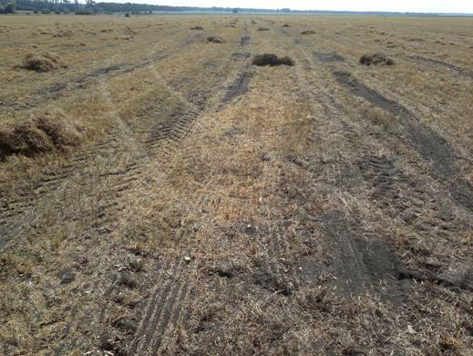

За вчасного проведення сівби більшість сортів сочевиці досягають стиглості на протязі 85 днів після появи сходів Орієнтовно це припадає на другу половину липня або початок серпня. Рослини сочевиці характеризуються індетермінантним типом росту і за сприятливих погодних умов, при достатній кількості вологи в грунті, боби на нижніх ярусах можуть бути уже стиглими а на верхніх ярусах продовжуватиметься цвітіння і зав’язування бобів. За таким умов подальший ріст і розвиток рослин припиняють шляхом скошування, або хімічною дисекацією.
Як скошування так і дисекацію проводять при дозріванні приблизно 70 % бобів на рослині. Якщо це зробити раніше то багато насіння не нальється буде щуплим, при затримці з скошуванням або дисекацією можливі значні втрати за рахунок розтріскування і висипання насіння з бобів на нижніх ярусах.
Як скошування так і хімічна десикація мають свої певні переваги. Так за оптимальних погодних умов скошування дає отримати насіння більш високої якості, так як у валках воно менше піддається дії сонячних променів і зберігає рівномірний зелений колі. Проте за не сприятливих погодних умов в наслідок дощів можуть бути значні втрати в наслідок довшого висихання рослин у валках, проростання насіння яке лежить ближче до землі, обсипання, зараження насіння грибними хворобами, особливо сапрофітними.
Застосування хімічної десикації дозволяє скоріше висушити рослини, зменшити втрати за рахунок розтріскування бобів, під час дощів посіви на яких була застосована хімічна десикація просихають скоріше, на них спостерігається менше розповсюдження хвороб. Як хімічні десиканти можна застосовувати Реглон (дикват), а також Гліфосат. Але останній знижує репродуктивні властивості насіння тому його небажано застосовувати на насіннєвих посівах. Крім того в деяких країнах, які імпортують сочевицю існують жорсткі обмеження щодо мінімального допустимого вмісту в насінні остатків Гліфосату.
Після проведення скошування або хімічної десикації сочевиця висихає і стає готовою до обмолоту на протязі 4-10 діб залежно від погодних умов та стану посівів. Обмолот потрібно починати коли насіння досягло вологості 14-16 %. Тому, що при пересиханні насіння відбуваються значні втрати в наслідок його пошкодження при обмолоті та за рахунок розтріскування бобів. Крім того при затримці зі збиранням і пересиханні насіння з 14% до 8 % втрати з вологою у вазі для урожаю в 500 т будуть еквівалентні 32 т, на додачу до інших втрат.
Сочевиця низькоросла культура тому висота зрізу повинна бути малою якомога ближче до землі. Рослини сочевиці мають слабке стебло і схильні до вилягання, тому може бути необхідним застосовувати спеціальні пристрої для підйому стебел. Скошування не бажано проводити в найжаркіші години дня, так як втрати врожаю при цьому сильно зростають.

Рис. 1. Поле сочевиці після обмолоту комбайном СК-5 «Нива»
В порівнянні з пшеницею, сочевиця вимолочується легше і сама по собі вона досить крихка, особливо при низькій вологості. Тому швидкість обертання барабана має бути меншою ніш для пшениці (табл. 2 і 3), а зазор між декою і барабаном більший (табл.4). |
Таблиця 1. Діаметр барабану або ротора і їх швидкість оборотів на хвилину при обмолоті сочевиці.
| Діаметр барабану або ротора, мм |
Швидкість оборотів на хвилину |
| 400 |
570 |
| 500 |
460 |
| 600 |
380 |
| 700 |
320 |
| 800 |
290 |
Таблиця 2. Діаметр барабану або ротора деяких марок комбайнів
| Виробник |
Модель |
Діаметр барабану або ротора, мм |
| Ростсельмаш |
Дон 1500 |
800 |
| Ростсельмаш |
СК-5 Нива |
600 |
| Case IH |
1688 |
760 |
| Claas |
116CS |
450 |
| Deutz Fahr |
M36 |
600 |
| Gleaner |
R70/72 |
635 |
| John Deere |
9600 |
660 |
| Massey Ferguson |
860 |
560 |
| New Holland |
TR95 |
432 |
Таблиця 3
Основні установки комбайна при обмолоті сочевиці
| |
Дрібнонасінна червона сочевиця |
Зелена сочевиця |
| Швидкість оборотів мотовила |
дещо більша ніж швидкість руху комбайна |
дещо більша ніж швидкість руху комбайна |
| Швидкість обертів барабана |
Див табл. 2 |
Див табл. 2 |
| Зазор між декою і барабаном |
10-20 мм |
13-20 мм |
| Потужність вітру |
60-75 % |
70-85 % |
| Верхнє решето |
10-20 мм |
13-25 мм |
| Нижнє решето |
5-10 мм |
8-16 мм |
Назад до змісту
Збирання сочевиці в Штаті Саскачеван (Канада)
дивитися
http://www.youtube.com/watch?v=EmMDIK6hx7g
http://www.youtube.com/watch?v=b6M6XJS9SQc |